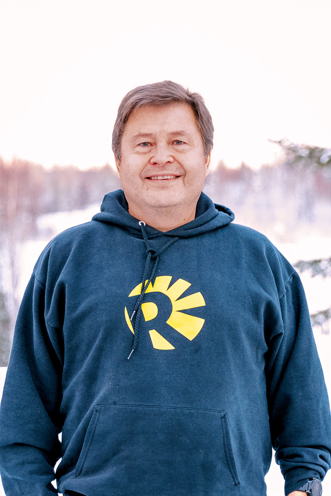

A family of servant missionaries, learning to be and make disciples.
We believe the glory of God is seen most beautifully in the Gospel of Jesus Christ. As a family of servant missionaries, our mission is to make Christ known through that Gospel — in our neighborhood, our city, and across Alaska.
The church has a clear biblical mandate to look beyond its own community to the neighborhood, the nation, and the world. Mission is not an optional program; it is an essential element of who we are. We exist to equip the saints for ministry and to seek Jesus being known in our local community.
We are a member church of A29 AK, a network of gospel-centered churches committed to planting and strengthening churches throughout Alaska.
"To be a radiant reflection of the Gospel to our cities and throughout the North — Gospel Communities who multiply disciples and churches."— Radiant Network Vision
Our convictions are rooted in Scripture and held in community. Read our full statement of faith →
The Gospel is the good news of what God has graciously accomplished for sinners through the sinless life, sacrificial death, and bodily resurrection of His Son, our Savior, Jesus Christ — our forgiveness from sin and complete justification before God. Christ's penal substitutionary death and bodily resurrection are central to our message.
We enthusiastically embrace the sovereignty of God's grace in saving sinners. The Gospel is not only the means by which people are saved, but the truth and power by which people are sanctified. Salvation is received by grace alone, through faith alone, in Christ alone.
We recognize and rest upon the necessity of the empowering presence of the Holy Spirit for all life and ministry. It is through the Spirit that we are transformed, empowered for mission, and drawn into deeper relationship with God.
We believe the Bible is the inspired and authoritative Word of God — the final rule for faith and practice. All teaching at Radiant is grounded in careful, faithful exposition of Scripture, with the aim of equipping believers to handle the Word of God accurately.
Radiant Church embraces a missionary understanding of the local church. We are called to make Christ known through the Gospel and, by the power of the Holy Spirit, to bring His lordship to bear on every dimension of life.
We believe the local church is God's primary means of establishing His kingdom on earth. Life is meant to be lived in community — worshiping together, discipling one another, and serving our neighbors in Fairbanks and beyond.
Radiant is an elder-led, elder-governed church. Elders are men called by God to serve as spiritual shepherds — giving themselves to prayer, the Word, teaching, and the care of the congregation.
